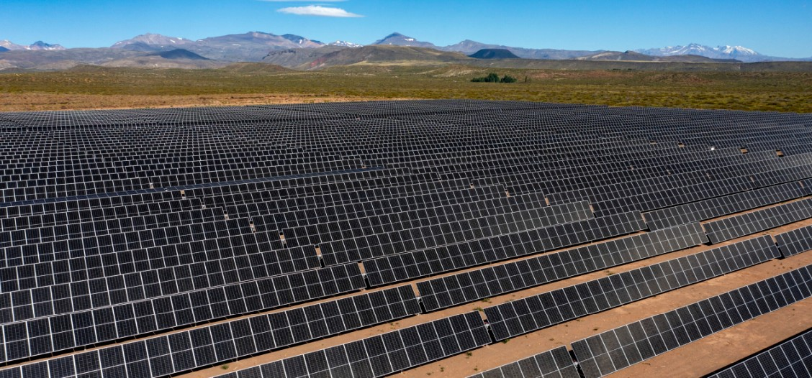
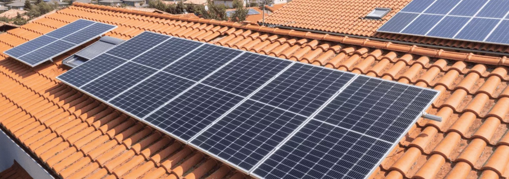

Esta aplicación te permite calcular de manera aproximada la cantidad de paneles solares
necesarios para una coordendada tomada como genérica asumida en el centro geográfico de
cada provincia. Se contemplan dos tipos de instalación:
Sobre piso (parque solar): los paneles se instalan en el suelo con orientación
hacia el norte. La inclinación óptima de los paneles se considera en los cálculos según cada
provincia. En la superficie a ocupar por los paneles se tiene en cuenta la separación que debe de
mantenerse entre filas para que la sombra que proyecta una fila sobre su inmediata posterior,
no afecte significativamente la generación. La siguiente imagen muestra un ejemplo de este tipo de
instalación:

Sobre techo: cuando se instalan paneles en el techo la orientación de este puede
no ser la óptima (hacia el norte), y la inclinación tampoco ser la óptima (depende de cada provincia).
Por lo tanto, para calcular sobre techo se consideraron valores promedio de desorientación e inclinación
resultado de lo mayoritariamente visto estadísticamente en la práctica de instalaciones sobre techo.
La siguiente imagen muestra un ejemplo de este tipo de instalación:

Según los datos con los que se cuente, será la información que suministre el calculador como resultado.
Los datos involucrados son los siguientes:
Cantidad de paneles: se consideran paneles solares fotovoltáicos de aprox. 25% de
rendimiento. Se trata de la cantidad de paneles necesaria para obtener el resultado solicitado"
Superficie: es la superficie que ocuparán los paneles. En el caso de instalación sobre
piso, se incluye la separación entre filas por tema sombras. En ambos casos sobre piso y techo se incluye
espacio necesario para poder efectuar la instalación (tendido de cables, fijación de soportes, etc.).
Energía: es la energía promedio acumulada en MWh (Mega Watts Hora) a lo largo del año producida
por el generador solar.
Potencia: la potencia que entrega el generador depende del mes del año y de la hora del día.
Se calcula la potencia en la hora de mayor insolación (mediodía) para el mes de mayor insolación
(tipicamente verano) y el mes de menor insolación (típicamente invierno). Estos meses NO son los mismos
en todas las provincias.
Costo: El costo es aproximado, Los costos incluyen supervisión, alojamiento, logística,
fletes, etc. por lo que resulta más cercano a la realidad para instalaciones que requieran más de 50
paneles solares.